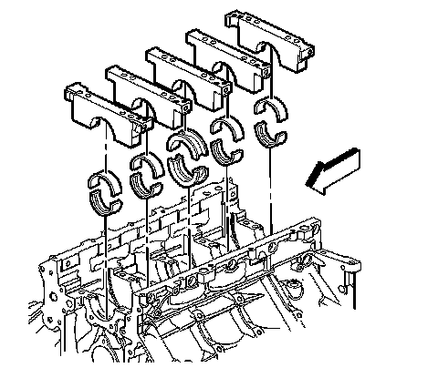
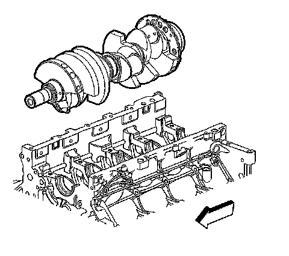
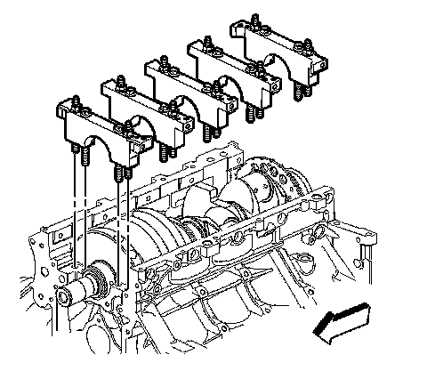
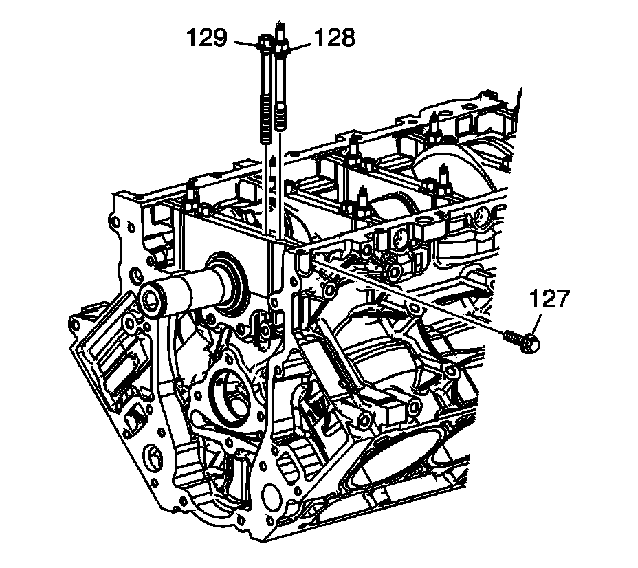
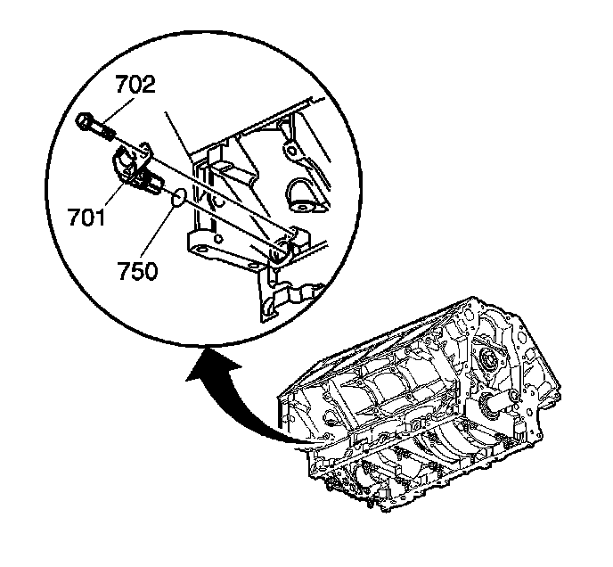

69. Crankshaft and Bearing Installation
Crankshaft and Bearings Installation
Tools Required
J 45059 Angle Meter

Important:
^ Crankshaft bearing clearances are critical. Excessive crankshaft bearing clearance may affect crankshaft position (CKP) sensor signals and/or on-board diagnostic (OBD) II system performance.
^ Crankshaft bearing caps must be installed to the proper location and direction.
^ When installing the crankshaft bearings, align the locating tabs on the bearings with the locating notches in the engine block journal bore and the bearing cap.
^ Always install crankshaft bearings with their machined partner. Do not file bearings or mix bearing halves.
^ In order to prevent engine block oil leakage, install NEW M8 crankshaft bearing cap side bolts.
The crankshaft bearing cap M8 side bolts have a pre-applied sealant patch applied to the bolt flange.
Install the crankshaft bearings to the engine block and bearing caps. The thrust bearings are to be installed into center journal.
1. Lubricate the bearing surfaces and crankshaft journals with clean engine oil.

Notice: To maintain proper crankshaft end play, use extreme care during crankshaft installation. Avoid scoring or damaging the thrust bearing.
2. Install the crankshaft.

Important: The bearing caps must be installed in the proper location and direction.
3. Install the crankshaft bearing caps, with bearings, into the engine block.

4. Install the M10 bolts (129) and studs (128).
5. Using a plastic-face hammer, tap the bearing caps into place.
6. Install the NEW M8 bearing cap side bolts (127).

Notice: Refer to Fastener Notice.
7. Tighten the bearing cap M10 bolts (1-10).
Tighten the M10 bearing cap bolts (1-10) a first pass in sequence to 20 N.m (15 lb ft).
Important: To properly align the crankshaft thrust bearings, the final thrust of the crankshaft MUST be in the forward direction.
8. Using a plastic-face hammer, tap the crankshaft rearward, then forward in order to align the thrust bearings.
1. Tighten the M10 bolts (1-10) a final pass in sequence 80 degrees using the J 45059.
2. Tighten the M10 studs (11-20) a first pass in sequence to 20 N.m (15 lb ft).
3. Tighten the M10 studs (11-20) a final pass in sequence 51 degrees using the J 45059.
4. Tighten the bearing cap side M8 bolts to 25 N.m (18 lb ft).
Tighten the bolt on 1 side of the bearing cap and then tighten the bolt on the opposite side of the same bearing cap.

9. Install the CKP sensor.
1. Inspect the CKP sensor O-ring seal (750). If the O-ring seal is not cut or damaged, it may be used again.
2. Coat the O-ring seal with clean engine oil.
3. Install the O-ring onto the sensor.
4. Install the sensor (701). Rotate the sensor until the locating hole in the bracket aligns with the bolt hole in the block.
5. Install the sensor bolt (702).
Tighten the CKP sensor bolt to 25 N.m (18 lb ft).
10. Measure the crankshaft end play.
1. Thrust the crankshaft forward or rearward.
2. Insert a feeler gage between the center crankshaft bearing and the bearing surface of the crankshaft and measure the bearing clearance.
The proper crankshaft end play clearance is 0.04-0.2 mm (0.0015-0.0078 in).
3. If the bearing clearance is not within specifications, inspect the thrust surfaces for nicks, gouges or raised metal. Minor imperfections may be removed with a fine stone.